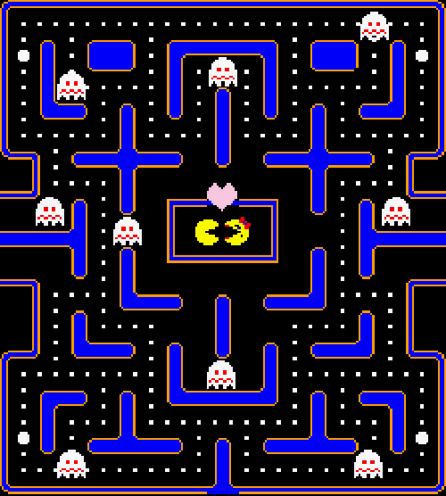
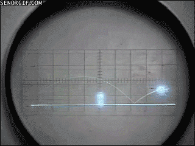
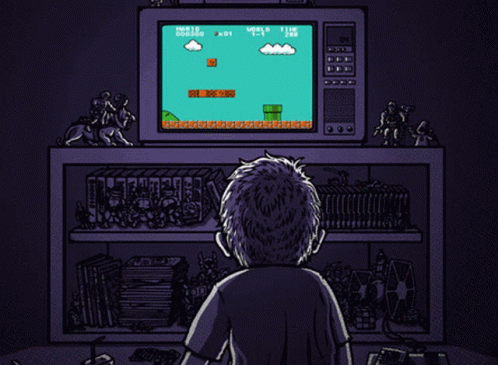

La historia de la programación de los videojuegos se remonta a la década de 1950, cuando se desarrollaron los primeros videojuegos simples como "Tennis for Two" y "Spacewar!". Estos juegos fueron creados en computadoras muy primitivas y requerían un conocimiento profundo de la programación para poder ser desarrollados. En la década de 1970, con el surgimiento de las consolas de videojuegos como Atari y Nintendo, la programación de videojuegos se convirtió en una industria en crecimiento. Los desarrolladores comenzaron a utilizar lenguajes de programación más avanzados y gráficos mejorados para crear juegos más complejos y atractivos. En los años siguientes, la programación de videojuegos evolucionó rápidamente con el desarrollo de nuevas tecnologías como los gráficos en 3D, la realidad virtual y la inteligencia artificial. Los desarrolladores de videojuegos han tenido que adaptarse constantemente a los avances tecnológicos para seguir creando experiencias de juego innovadoras y emocionantes.

|
Hoy en día, la programación de videojuegos es una industria multimillonaria con miles de desarrolladores trabajando en todo el mundo para crear juegos para una amplia variedad de plataformas, desde consolas de videojuegos hasta dispositivos móviles y computadoras personales. La programación de videojuegos sigue siendo un campo en constante evolución, con nuevos avances tecnológicos y tendencias emergentes que moldean el futuro de la industria.
TENNIS FOR TWO El primer videojuego reconocido como tal es "Tennis for Two", creado en 1958 por el físico William Higinbotham en el Laboratorio Nacional de Brookhaven, en Nueva York. Este juego era una simulación de un partido de tenis en una pantalla de osciloscopio y permitía a dos jugadores competir entre sí utilizando perillas para controlar la velocidad y la dirección de la pelota. 
|
SPACEWAR Otro de los primeros videojuegos importantes fue "Spacewar!", desarrollado en 1962 por Steve Russell y un grupo de estudiantes del Instituto Tecnológico de Massachusetts (MIT). Este juego permitía a dos jugadores controlar naves espaciales y luchar entre sí en un campo gravitacional mientras evitaban ser absorbidos por un sol simulado. Ambos juegos sentaron las bases para la industria de los videojuegos y marcaron el comienzo de una larga historia de innovación y creatividad en el mundo de la programación de videojuegos.

|